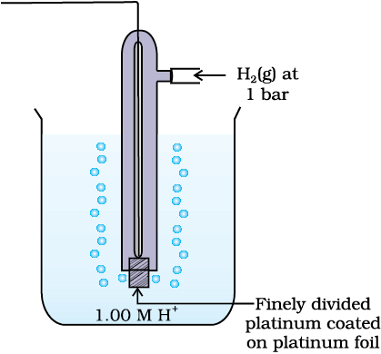
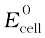
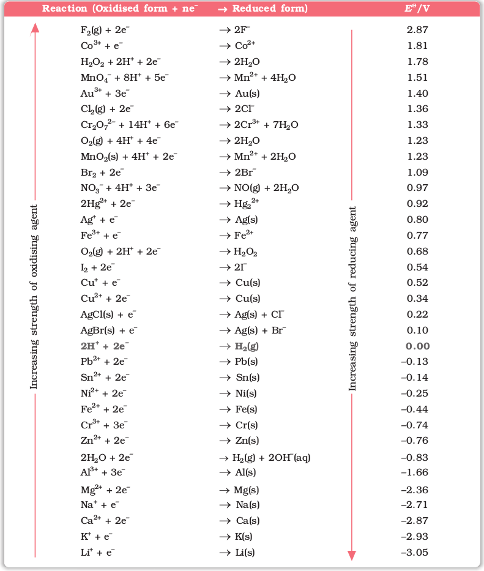

A galvanic cell is an electrochemical cell that converts the chemical energy of a spontaneous redox reaction into electrical energy. In this device the Gibbs energy of the spontaneous redox reaction is converted into electrical work which may be used for running a motor or other electrical gadgets like heater, fan, geyser, etc.
Daniell cell discussed earlier is one such cell in which the following redox reaction occurs.
Zn(s) + Cu2+(aq) → Zn2+ (aq) + Cu(s)
This reaction is a combination of two half reactions whose addition gives the overall cell reaction:
(i) Cu2+ + 2e– → Cu(s) (reduction half reaction) (3.2)
(ii) Zn(s) → Zn2+ + 2e– (oxidation half reaction) (3.3)
These reactions occur in two different portions of the Daniell cell. The reduction half reaction occurs on the copper electrode while the oxidation half reaction occurs on the zinc electrode. These two portions of the cell are also called half-cells or redox couples. The copper electrode may be called the reduction half cell and the zinc electrode, the oxidation half-cell.
We can construct innumerable number of galvanic cells on the pattern of Daniell cell by taking combinations of different half-cells. Each half-cell consists of a metallic electrode dipped into an electrolyte. The two half-cells are connected by a metallic wire through a voltmeter and a switch externally. The electrolytes of the two half-cells are connected internally through a salt bridge. Sometimes, both the electrodes dip in the same electrolyte solution and in such cases we do not require a salt bridge.
At each electrode-electrolyte interface there is a tendency of metal ions from the solution to deposit on the metal electrode trying to make it positively charged. At the same time, metal atoms of the electrode have a tendency to go into the solution as ions and leave behind the electrons at the electrode trying to make it negatively charged. At equilibrium, there is a separation of charges and depending on the tendencies of the two opposing reactions, the electrode may be positively or negatively charged with respect to the solution. A potential difference develops between the electrode and the electrolyte which is called electrode potential. When the concentrations of all the species involved in a half-cell is unity then the electrode potential is known as standard electrode potential. According to IUPAC convention, standard reduction potentials are now called standard electrode potentials. In a galvanic cell, the half-cell in which oxidation takes place is called anode and it has a negative potential with respect to the solution. The other half-cell in which reduction takes place is called cathode and it has a positive potential with respect to the solution. Thus, there exists a potential difference between the two electrodes and as soon as the switch is in the on position the electrons flow from negative electrode to positive electrode. The direction of current flow is opposite to that of electron flow.
The potential difference between the two electrodes of a galvanic cell is called the cell potential and is measured in volts. The cell potential is the difference between the electrode potentials (reduction potentials) of the cathode and anode. It is called the cell electromotive force (emf) of the cell when no current is drawn through the cell. It is now an accepted convention that we keep the anode on the left and the cathode on the right while representing the galvanic cell. A galvanic cell is generally represented by putting a vertical line between metal and electrolyte solution and putting a double vertical line between the two electrolytes connected by a salt bridge. Under this convention the emf of the cell is positive and is given by the potential of the half-cell on the right hand side minus the potential of the half-cell on the left hand side i.e.,
Ecell = Eright – Eleft
This is illustrated by the following example:
Cell reaction:
Cu(s) + 2Ag+(aq) → Cu2+(aq) + 2 Ag(s) (3.4)
Half-cell reactions:
Cathode (reduction): 2Ag+(aq) + 2e– → 2Ag(s) (3.5)
Anode (oxidation): Cu(s) → Cu2+(aq) + 2e– (3.6)
It can be seen that the sum of (3.5) and (3.6) leads to overall reaction (3.4) in the cell and that silver electrode acts as a cathode and copper electrode acts as an anode. The cell can be represented as:
Cu(s)|Cu2+(aq)||Ag+(aq)|Ag(s)
and we have Ecell = Eright – Eleft = EAg+Ag – ECu2+Cu (3.7)

Standard Hydrogen Electrode (SHE).
If we arbitrarily choose the potential of one electrode (half-cell) then that of the other can be determined with respect to this. According to convention, a half-cell called standard hydrogen electrode represented by Pt(s) H2(g) H+(aq), is assigned a zero potential at all temperatures corresponding to the reaction
H+ (aq) + e– → H2(g)
The standard hydrogen electrode consists of a platinum electrode coated with platinum black. The electrode is dipped in an acidic solution and pure hydrogen gas is bubbled through it. The concentration of both the reduced and oxidised forms of hydrogen is maintained at unity. This implies that the pressure of hydrogen gas is one bar and the concentration of hydrogen ion in the solution is one molar.
At 298 K the emf of the cell, standard hydrogen electrode second half-cell constructed by taking standard hydrogen electrode as anode (reference half-cell) and the other half-cell as cathode, gives the reduction potential of the other half-cell. If the concentrations of the oxidised and the reduced forms of the species in the right hand half-cell are unity, then the cell potential is equal to standard electrode potential, E⊖R of the given half-cell.
E⊖ = E⊖R – E⊖L
As E⊖L for standard hydrogen electrode is zero.
E⊖ = E⊖R – 0 = E⊖R
The measured emf of the cell:
Pt(s) H2(g, 1 bar) H+ (aq, 1 M) Cu2+ (aq, 1 M) Cu
is 0.34 V and it is also the value for the standard electrode potential of the half-cell corresponding to the reaction:
Cu2+ (aq, 1M) + 2 e– → Cu(s)
Similarly, the measured emf of the cell:
Pt(s) H2(g, 1 bar) H+ (aq, 1 M) Zn2+ (aq, 1M) Zn
is -0.76 V corresponding to the standard electrode potential of the half-cell reaction:
Zn2+ (aq, 1 M) + 2e– → Zn(s)
The positive value of the standard electrode potential in the first case indicates that Cu2+ ions get reduced more easily than H+ ions. The reverse process cannot occur, that is, hydrogen ions cannot oxidise Cu (or alternatively we can say that hydrogen gas can reduce copper ion) under the standard conditions described above. Thus, Cu does not dissolve in HCl. In nitric acid it is oxidised by nitrate ion and not by hydrogen ion. The negative value of the standard electrode potential in the second case indicates that hydrogen ions can oxidise zinc (or zinc can reduce hydrogen ions).
In view of this convention, the half reaction for the Daniell cell can be written as:
Left electrode: Zn(s) → Zn2+ (aq, 1 M) + 2 e–
Right electrode: Cu2+ (aq, 1 M) + 2 e– → Cu(s)
The overall reaction of the cell is the sum of above two reactions and we obtain the equation:
Zn(s) + Cu2+ (aq) → Zn2+ (aq) + Cu(s)
emf of the cell =  = E0R – E0L
= 0.34V – (– 0.76)V = 1.10 V
Sometimes metals like platinum or gold are used as inert electrodes. They do not participate in the reaction but provide their surface for oxidation or reduction reactions and for the conduction of electrons. For example, Pt is used in the following half-cells:
Hydrogen electrode: Pt(s)|H2(g)| H+(aq)
With half-cell reaction: H+ (aq)+ e– → ½ H2(g)
Bromine electrode: Pt(s)|Br2(aq)| Br–(aq)
With half-cell reaction: ½ Br2(aq) + e– → Br–(aq)
The standard electrode potentials are very important and we can extract a lot of useful information from them. The values of standard electrode potentials for some selected half-cell reduction reactions are given in the table below. If the standard electrode potential of an electrode is greater than zero then its reduced form is more stable compared to hydrogen gas. Similarly, if the standard electrode potential is negative then hydrogen gas is more stable than the reduced form of the species. It can be seen that the standard electrode potential for fluorine is the highest in the table indicating that fluorine gas (F2) has the maximum tendency to get reduced to fluoride ions (F–) and therefore fluorine gas is the strongest oxidising agent and fluoride ion is the weakest reducing agent. Lithium has the lowest electrode potential indicating that lithium ion is the weakest oxidising agent while lithium metal is the most powerful reducing agent in an aqueous solution. It may be seen that as we go from top to bottom in the table the standard electrode potential decreases and with this, decreases the oxidising power of the species on the left and increases the reducing power of the species on the right hand side of the reaction. Electrochemical cells are extensively used for determining the pH of solutions, solubility product, equilibrium constant and other thermodynamic properties and for potentiometric titrations.
